Açıklama
Saat Kulesi ve Sultan Murat Camii


Subaylar Evi'ndeki balo salonu

Subaylar Evi'ndeki balo salonu

Kale'den Üsküp merkezine bakış
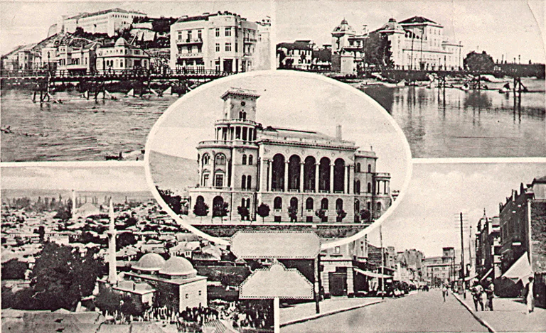
Yahudi mahallesinin evleri ve üstlerinde Kale
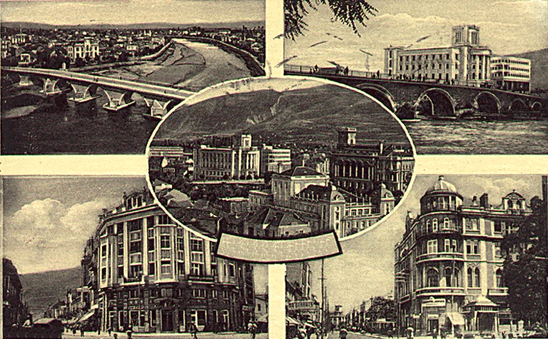
Ana cadde ve Kranga Sarayı
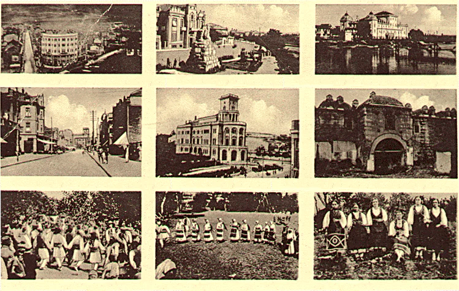
Balkan Savaşları'nda düşen savaşçılar anıtı

Balkan Savaşları'nda düşen savaşçılar anıtı

Şehrin merkez bölgesinin panoraması
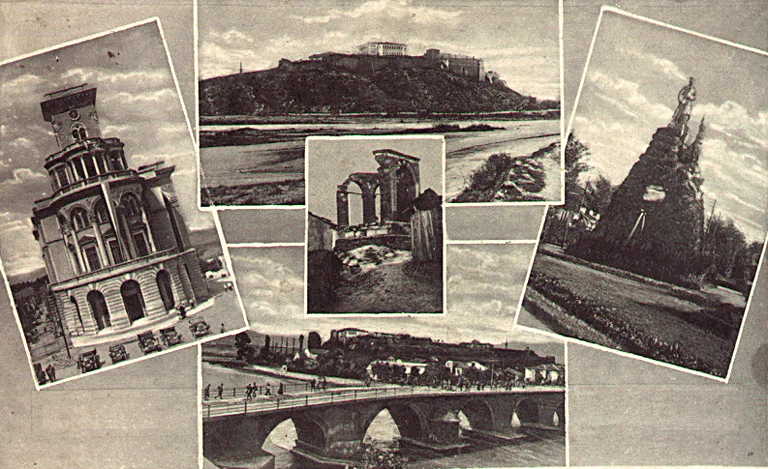
Balkan Savaşları'nda düşen savaşçılar anıtı
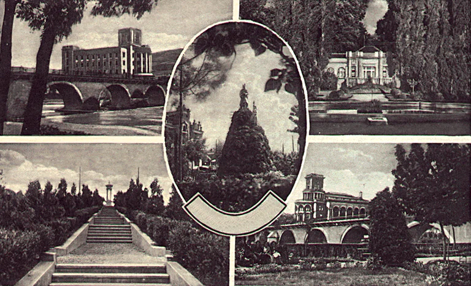
Düşen Fransız askerlerinin anıtı. Yeri bugünkü Fransız mezarlığıdır.
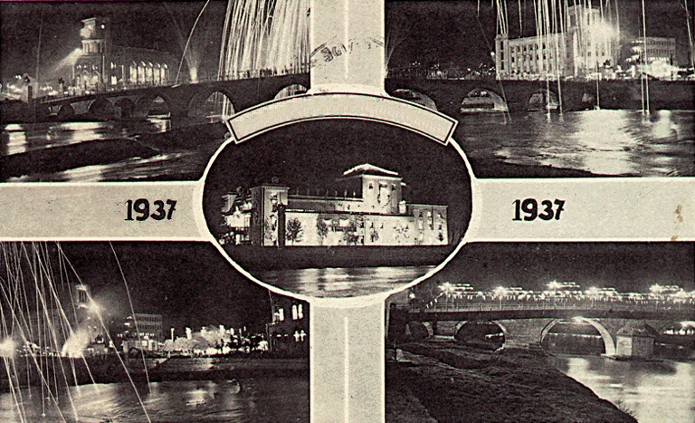
Taş Köprü, Milli Banka ve Subaylar Evi
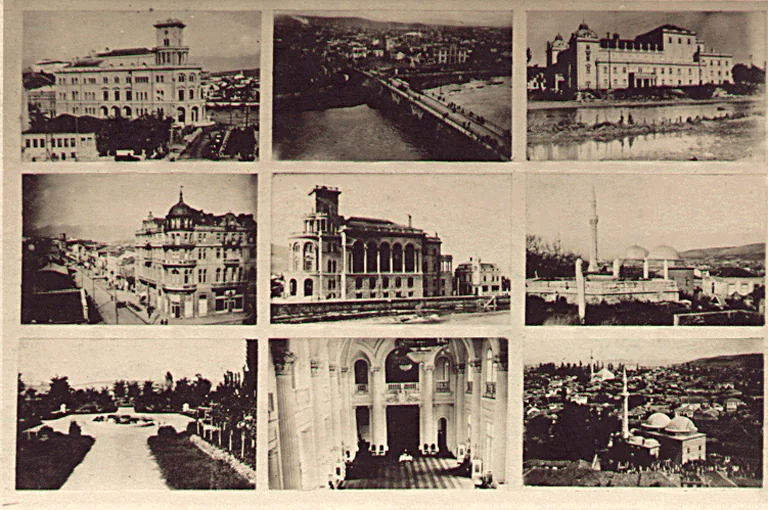
İsa Bey ve Yahya Paşa camileri
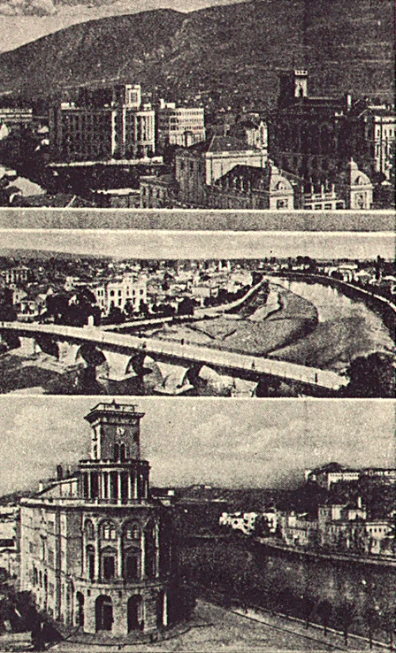
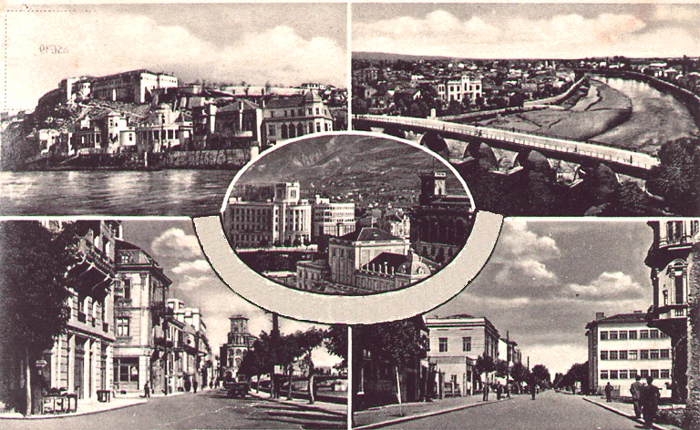
Arka planda Kale ile panorama

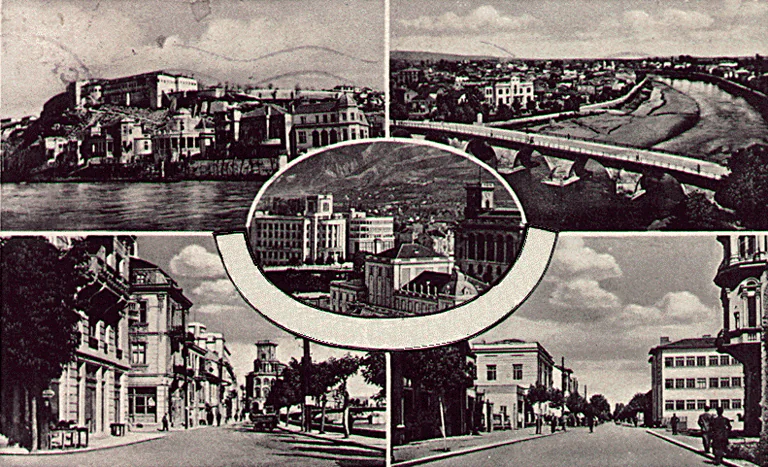

Şehir merkezinin panoraması

Saat Kulesi ve Sultan Murat Camii
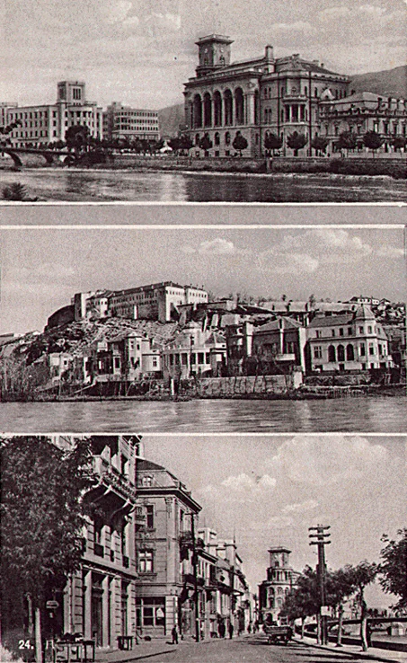
Yahudi mahallesi ve Kale
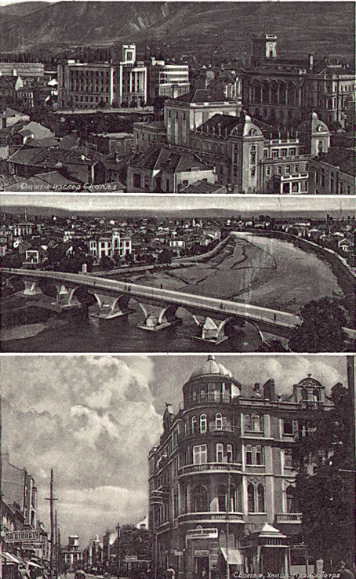
Ana cadde ve Kranga Sarayı

Milli Banka, Subaylar Evi ve Taş Köprü
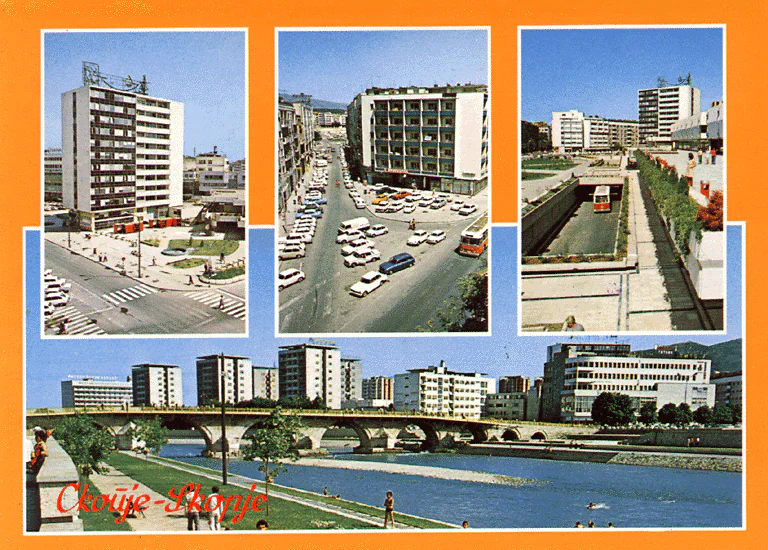
Taş Köprü ve Üsküp'ün merkezi
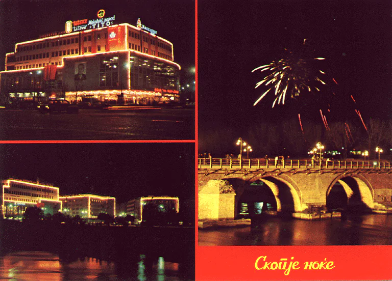
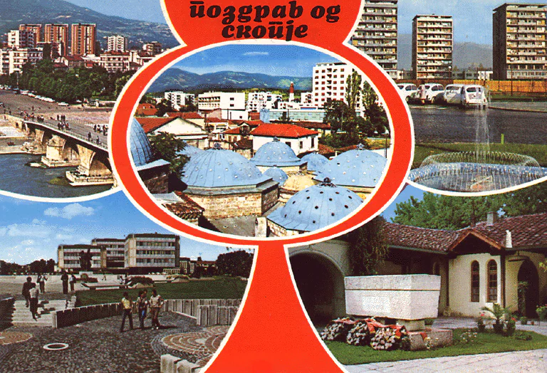
Makedonya Cumhuriyeti hükümet binasıyla rıhtımın bir bölümü

Taş Köprü ve Vardar'daki kuleler
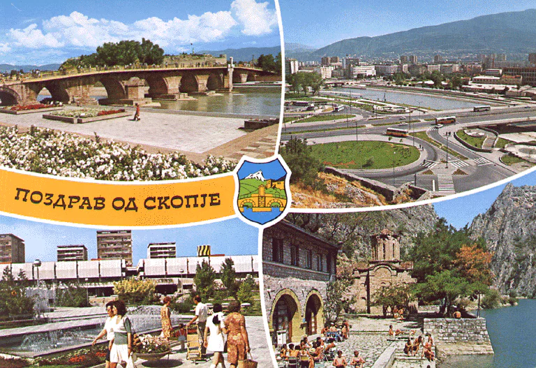
Kale'den meydana bakış
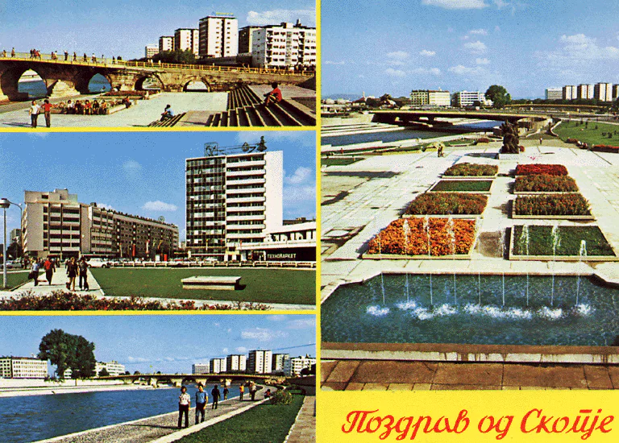

İkinci Dünya Savaşı'nda düşen savaşçılar anıtı

"Savaşçı Kadın" parkının bir bölümü ve Üsküp merkezi


Kale'den meydana bakış

Üsküp merkezinin bir bölümü.
"Goce Delčev" Köprüsü
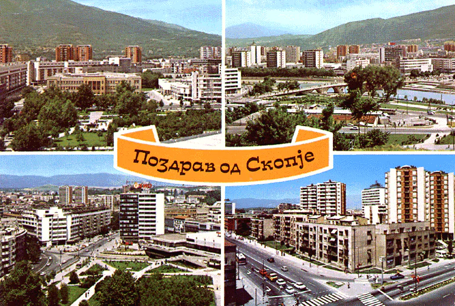
Üsküp merkezinin bir bölümü.
"Savaşçı Kadın" Parkı

"Savaşçı Kadın" Parkı, arka planda alışveriş merkezi
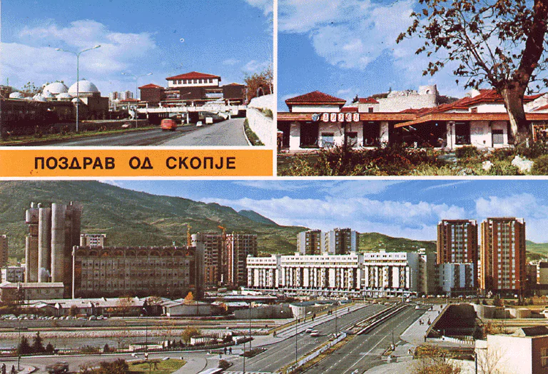
Telekomünikasyon merkezi ve "Goce Delčev" Köprüsü


Taş Köprü ve "Goce Delčev" Köprüsü
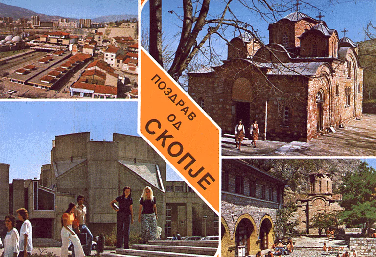
Üniversite
"Aziz Kiril ve Metodi"
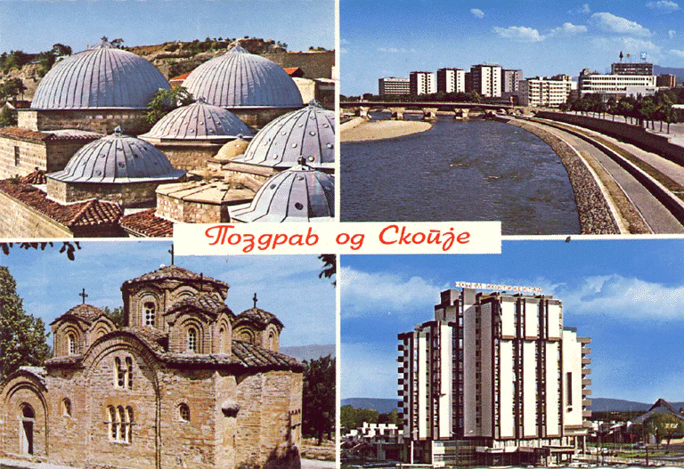
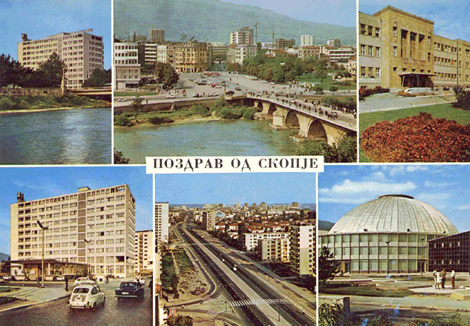
"Partizanski odredi" Caddesi

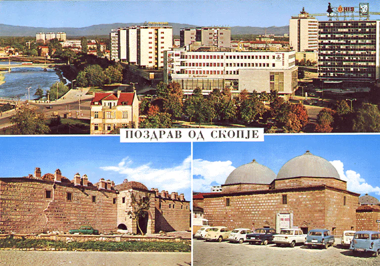
Kale'den meydanın görünümü

"Savaşçı Kadın" parkının bir bölümü ve Üsküp alışveriş merkezi

Taş Köprü ve meydan
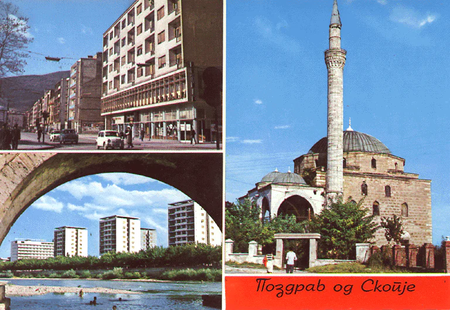
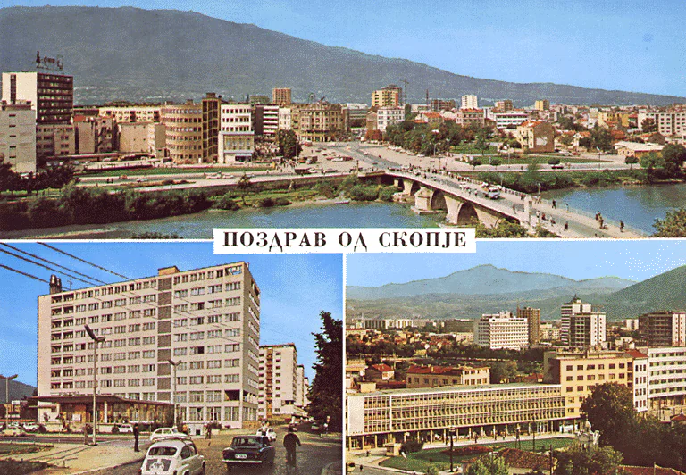


Üsküp merkezinin bir bölümü.
"Savaşçı Kadın" Parkı
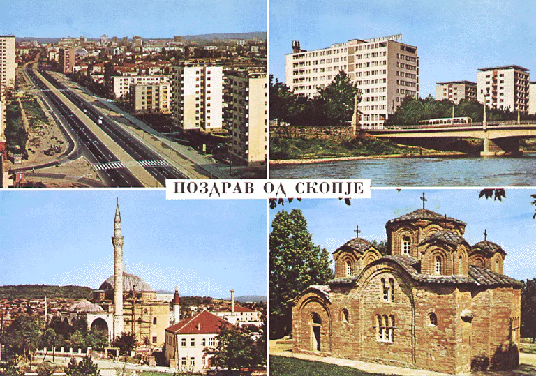
Grand Otel ve Beton Köprü

İkinci Dünya Savaşı'nda düşen savaşçılar anıtı

Kilise
Ohrili Aziz Kliment
Fotoğraf albümü


Konu
 Su kemeri4 kartpostal
Su kemeri4 kartpostal Kale30 kartpostal
Kale30 kartpostal Köprüler60 kartpostal
Köprüler60 kartpostal Rıhtım58 kartpostal
Rıhtım58 kartpostal Meydan46 kartpostal
Meydan46 kartpostal Binalar66 kartpostal
Binalar66 kartpostal Hristiyan kiliseleri19 kartpostal
Hristiyan kiliseleri19 kartpostal İslami yapılar33 kartpostal
İslami yapılar33 kartpostal Subaylar Evi29 kartpostal
Subaylar Evi29 kartpostal Tiyatro28 kartpostal
Tiyatro28 kartpostal Tren garı13 kartpostal
Tren garı13 kartpostal Okullar36 kartpostal
Okullar36 kartpostal Parklar12 kartpostal
Parklar12 kartpostal Pazarlar18 kartpostal
Pazarlar18 kartpostal Sokaklar38 kartpostal
Sokaklar38 kartpostal Panorama I60 kartpostal
Panorama I60 kartpostal Panorama II30 kartpostal
Panorama II30 kartpostal Kolajlar55 kartpostal
Kolajlar55 kartpostal Seller9 kartpostal
Seller9 kartpostal Deprem27 kartpostal
Deprem27 kartpostal Üsküp 200026 kartpostal
Üsküp 200026 kartpostal